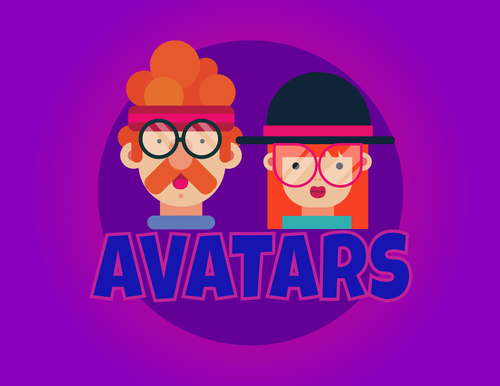
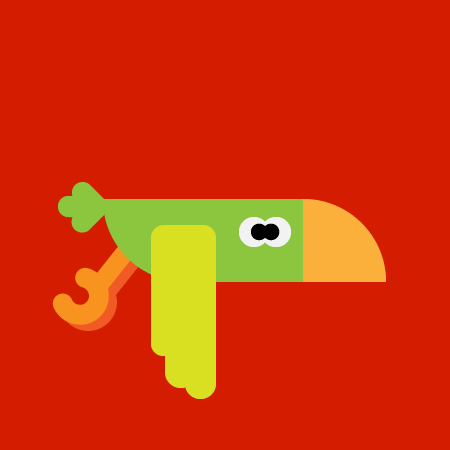
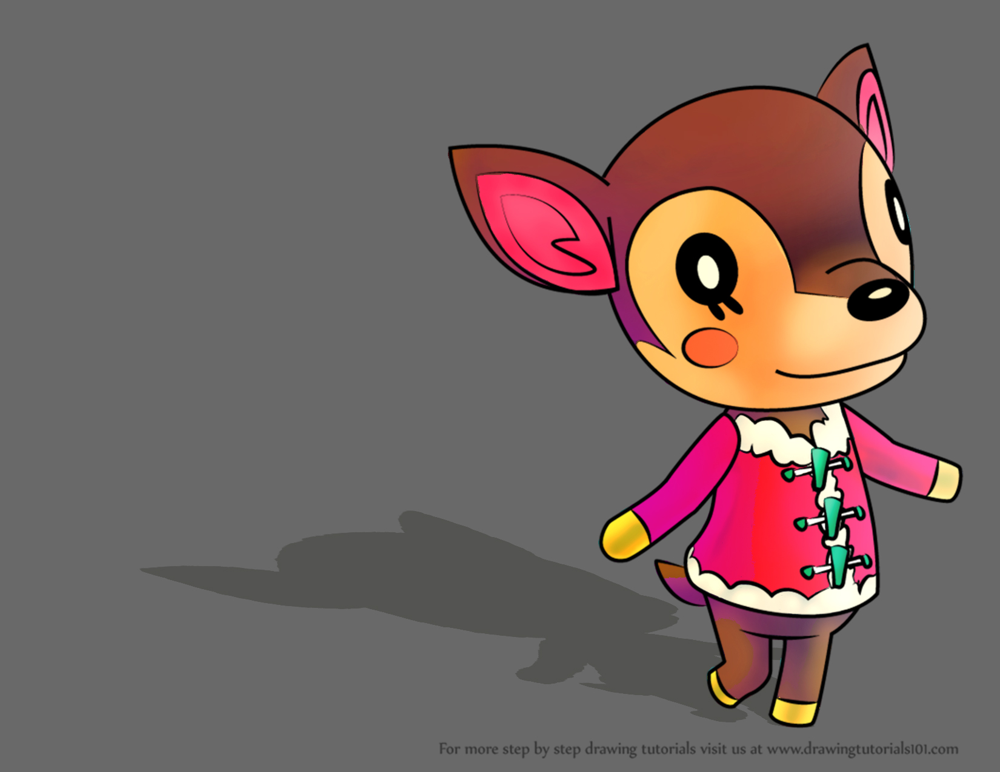
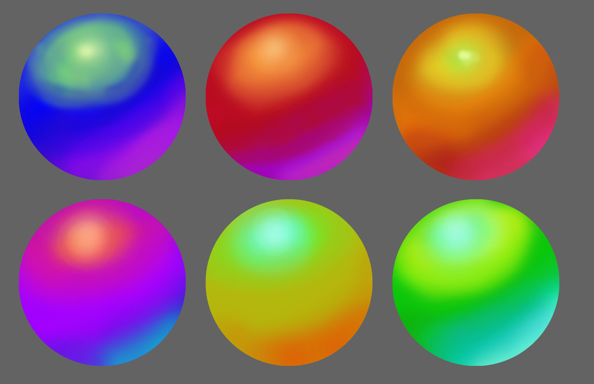

Hello, my name is Caleb Hill. I have been surrounded by computers since I was a little kid, as I grew up I have learned so much about digital media that I decided it is going to be my passion in life. My dad introduced me to electronics because he was a computers person at the University of Central Florida. Since then, I grew up to buying my first computer and playing on my first xbox which I still have today. I started to get more into computers by taking them apart (when they were broken) to see what I could do to fix them. As I started to get more into computers, I found making videos of my favorite NFL team would be fun and it is. Now I have learned from interesting Digital Media classes at Seminole State College to help me improve on my capabilities in Digital Media. I have followed my brothers footsteps by taking the same major and by using my Digital Media experince to live stream sports games at my old high school Familiy Christian Academy. I have recently partnered with my high school classmate to be taking photos, videos, and live streaming his basketball games and with the beginning of my Digital Media career I am hoping to lean closer to my goal on becoming a member at the Tampa Bay Buccaneers Media team.
You can see my content at:




